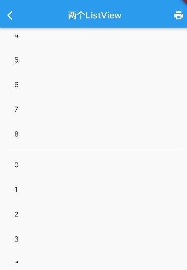
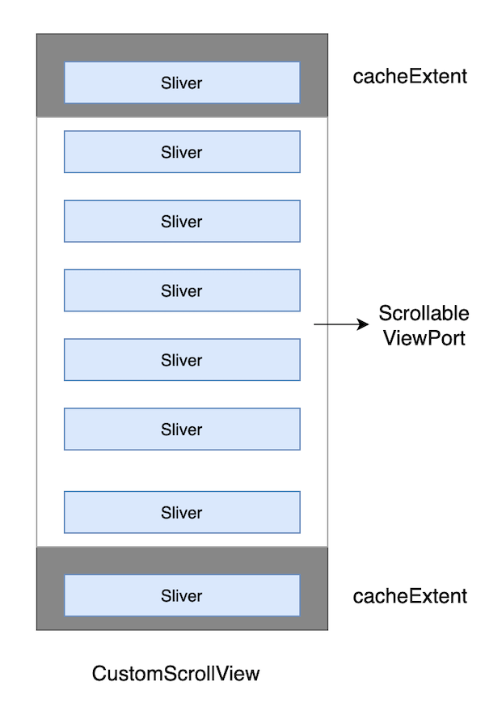

6.10 CustomScrollView 和 Slivers
6.10.1 CustomScrollView
前面介绍的 ListView、GridView、PageView 都是一个完整的可滚动组件，所谓完整是指它们都包括Scrollable 、 Viewport 和 Sliver。假如我们想要在一个页面中，同时包含多个可滚动组件，且使它们的滑动效果能统一起来，比如：我们想将已有的两个沿垂直方向滚动的 ListView 成一个 ListView ，这样在第一ListView 滑动到底部时能自动接上第二 ListView，如果尝试写一个 demo：
Widget buildTwoListView() {
var listView = ListView.builder(
itemCount: 20,
itemBuilder: (_, index) => ListTile(title: Text('$index')),
);
return Column(
children: [
Expanded(child: listView),
Divider(color: Colors.grey),
Expanded(child: listView),
],
);
}
}
运行效果如图6-22所示：

页面中有两个 ListView，各占可视区域一半高度，虽然能够显式出来，但每一个 ListView 只会响应自己可视区域中滑动，实现不了我们想要的效果。之所以会这样的原因是两个 ListView 都有自己独立的 Scrollable 、 Viewport 和 Sliver，既然如此，我们自己创建一个共用的 Scrollable 和 Viewport 对象，然后再将两个 ListView 对应的 Sliver 添加到这个共用的 Viewport 对象中就可以实现我们想要的效果了。如果这个工作让开发者自己来做无疑是比较麻烦的，因此 Flutter 提供了一个 CustomScrollView 组件来帮助我们创建一个公共的 Scrollable 和 Viewport ，然后它的 slivers 参数接受一个 Sliver 数组，这样我们就可以使用CustomScrollView 方面的实现我们期望的功能了：
Widget buildTwoSliverList() {
// SliverFixedExtentList 是一个 Sliver，它可以生成高度相同的列表项。
// 再次提醒，如果列表项高度相同，我们应该优先使用SliverFixedExtentList
// 和 SliverPrototypeExtentList，如果不同，使用 SliverList.
var listView = SliverFixedExtentList(
itemExtent: 56, //列表项高度固定
delegate: SliverChildBuilderDelegate(
(_, index) => ListTile(title: Text('$index')),
childCount: 10,
),
);
// 使用
return CustomScrollView(
slivers: [
listView,
listView,
],
);
}
运行后效果图6-23所示：
可以看到我们期望的效果实现了。
综上，CustomScrollView 的主要功能是提供一个公共的 Scrollable 和 Viewport，来组合多个 Sliver，CustomScrollView 的结构如图6-24：

6.10.2 Flutter 中常用的 Sliver
之前小节介绍过的可滚动组件都有对应的 Sliver：
| Sliver名称 | 功能 | 对应的可滚动组件 |
|---|---|---|
| SliverList | 列表 | ListView |
| SliverFixedExtentList | 高度固定的列表 | ListView，指定itemExtent时 |
| SliverAnimatedList | 添加/删除列表项可以执行动画 | AnimatedList |
| SliverGrid | 网格 | GridView |
| SliverPrototypeExtentList | 根据原型生成高度固定的列表 | ListView，指定prototypeItem 时 |
| SliverFillViewport | 包含多个子组件，每个都可以填满屏幕 | PageView |
除了和列表对应的 Sliver 之外还有一些用于对 Sliver 进行布局、装饰的组件，它们的子组件必须是 Sliver，我们列举几个常用的：
| Sliver名称 | 对应 RenderBox |
|---|---|
| SliverPadding | Padding |
| SliverVisibility、SliverOpacity | Visibility、Opacity |
| SliverFadeTransition | FadeTransition |
| SliverLayoutBuilder | LayoutBuilder |
还有一些其他常用的 Sliver：
| Sliver名称 | 说明 |
|---|---|
| SliverAppBar | 对应 AppBar，主要是为了在 CustomScrollView 中使用。 |
| SliverToBoxAdapter | 一个适配器，可以将 RenderBox 适配为 Sliver，后面介绍。 |
| SliverPersistentHeader | 滑动到顶部时可以固定住，后面介绍。 |
Sliver系列 Widget 比较多，我们不会一一介绍，读者只需记住它的特点，需要时再去查看文档即可。上面之所以说“大多数”Sliver都和可滚动组件对应，是由于还有一些如SliverPadding、SliverAppBar 等是和可滚动组件无关的，它们主要是为了结合CustomScrollView一起使用，这是因为CustomScrollView的子组件必须都是Sliver。
示例
// 因为本路由没有使用 Scaffold，为了让子级Widget(如Text)使用
// Material Design 默认的样式风格,我们使用 Material 作为本路由的根。
Material(
child: CustomScrollView(
slivers: <Widget>[
// AppBar，包含一个导航栏.
SliverAppBar(
pinned: true, // 滑动到顶端时会固定住
expandedHeight: 250.0,
flexibleSpace: FlexibleSpaceBar(
title: const Text('Demo'),
background: Image.asset(
"./imgs/sea.png",
fit: BoxFit.cover,
),
),
),
SliverPadding(
padding: const EdgeInsets.all(8.0),
sliver: SliverGrid(
//Grid
gridDelegate: SliverGridDelegateWithFixedCrossAxisCount(
crossAxisCount: 2, //Grid按两列显示
mainAxisSpacing: 10.0,
crossAxisSpacing: 10.0,
childAspectRatio: 4.0,
),
delegate: SliverChildBuilderDelegate(
(BuildContext context, int index) {
//创建子widget
return Container(
alignment: Alignment.center,
color: Colors.cyan[100 * (index % 9)],
child: Text('grid item $index'),
);
},
childCount: 20,
),
),
),
SliverFixedExtentList(
itemExtent: 50.0,
delegate: SliverChildBuilderDelegate(
(BuildContext context, int index) {
//创建列表项
return Container(
alignment: Alignment.center,
color: Colors.lightBlue[100 * (index % 9)],
child: Text('list item $index'),
);
},
childCount: 20,
),
),
],
),
);
代码分为三部分：
- 头部
SliverAppBar：SliverAppBar对应AppBar，两者不同之处在于SliverAppBar可以集成到CustomScrollView。SliverAppBar可以结合FlexibleSpaceBar实现Material Design中头部伸缩的模型，具体效果，读者可以运行该示例查看。 - 中间的
SliverGrid：它用SliverPadding包裹以给SliverGrid添加补白。SliverGrid是一个两列，宽高比为4的网格，它有20个子组件。 - 底部
SliverFixedExtentList：它是一个所有子元素高度都为50像素的列表。
运行效果如图6-25、6-26所示：
SliverToBoxAdapter
在实际布局中，我们通常需要往 CustomScrollView 中添加一些自定义的组件，而这些组件并非都有 Sliver 版本，为此 Flutter 提供了一个 SliverToBoxAdapter 组件，它是一个适配器：可以将 RenderBox 适配为 Sliver。比如我们想在列表顶部添加一个可以横向滑动的 PageView，可以使用 SliverToBoxAdapter 来配置：
CustomScrollView(
slivers: [
SliverToBoxAdapter(
child: SizedBox(
height: 300,
child: PageView(
children: [Text("1"), Text("2")],
),
),
),
buildSliverFixedList(),
],
);
注意，上面的代码是可以正常运行的，但是如果将 PageView 换成一个滑动方向和 CustomScrollView 一致的 ListView 则不会正常工作！原因是：CustomScrollView 组合 Sliver 的原理是为所有子 Sliver 提供一个共享的 Scrollable，然后统一处理指定滑动方向的滑动事件，如果 Sliver 中引入了其他的 Scrollable，则滑动事件便会冲突。上例中 PageView 之所以能正常工作，是因为 PageView 的 Scrollable 只处理水平方向的滑动，而 CustomScrollView 是处理垂直方向的，两者并未冲突，所以不会有问题，但是换一个也是垂直方向的 ListView 时则不能正常工作，最终的效果是，在ListView内滑动时只会对ListView 起作用，原因是滑动事件被 ListView 的 Scrollable 优先消费，CustomScrollView 的 Scrollable 便接收不到滑动事件了。
Flutter 中手势的冲突时，默认的策略是子元素生效，这个我们将在后面事件处理相关章节介绍。
所以我们可以得出一个结论：如果 CustomScrollView 有孩子也是一个完整的可滚动组件且它们的滑动方向一致，则 CustomScrollView 不能正常工作。要解决这个问题，可以使用 NestedScrollView，这个我们将在下一节介绍。
SliverPersistentHeader
SliverPersistentHeader 的功能是当滑动到 CustomScrollView 的顶部时，可以将组件固定在顶部。
需要注意， Flutter 中设计 SliverPersistentHeader 组件的初衷是为了实现 SliverAppBar，所以它的一些属性和回调在SliverAppBar 中才会用到。因此，如果我们要直接使用 SliverPersistentHeader，看到它的一些配置和参数会感到疑惑，使用起来会感觉有心智成本，为此，笔者会在下面介绍中指出哪些是需要我们重点关注的，哪些是可以忽略的，最后为了便于使用，我们会封装一个SliverHeaderDelegate ，通过它我们只需要配置我们关注的属性即可。
我们先看看 SliverPersistentHeader 的定义：
const SliverPersistentHeader({
Key? key,
// 构造 header 组件的委托
required SliverPersistentHeaderDelegate delegate,
this.pinned = false, // header 滑动到可视区域顶部时是否固定在顶部
this.floating = false, // 正文部分介绍
})
floating 的作用是：pinned 为 false 时 ，则 header 可以滑出可视区域（CustomScrollView 的 Viewport）（不会固定到顶部），当用户再次向下滑动时，此时不管 header 已经被滑出了多远，它都会立即出现在可视区域顶部并固定住，直到继续下滑到 header 在列表中原来的位置时，header 才会重新回到原来的位置（不再固定在顶部）。 具体效果，我们后面会有示例，读者可以实际运行起来看看效果。
delegate 是用于生成 header 的委托，类型为 SliverPersistentHeaderDelegate，它是一个抽象类，需要我们自己实现，定义如下：
abstract class SliverPersistentHeaderDelegate {
// header 最大高度；pined为 true 时，当 header 刚刚固定到顶部时高度为最大高度。
double get maxExtent;
// header 的最小高度；pined为true时，当header固定到顶部，用户继续往上滑动时，header
// 的高度会随着用户继续上滑从 maxExtent 逐渐减小到 minExtent
double get minExtent;
// 构建 header。
// shrinkOffset取值范围[0,maxExtent],当header刚刚到达顶部时，shrinkOffset 值为0，
// 如果用户继续向上滑动列表，shrinkOffset的值会随着用户滑动的偏移减小，直到减到0时。
//
// overlapsContent：一般不建议使用，在使用时一定要小心，后面会解释。
Widget build(BuildContext context, double shrinkOffset, bool overlapsContent);
// header 是否需要重新构建；通常当父级的 StatefulWidget 更新状态时会触发。
// 一般来说只有当 Delegate 的配置发生变化时，应该返回false，比如新旧的 minExtent、maxExtent
// 等其他配置不同时需要返回 true，其余情况返回 false 即可。
bool shouldRebuild(covariant SliverPersistentHeaderDelegate oldDelegate);
// 下面这几个属性是SliverPersistentHeader在SliverAppBar中时实现floating、snap
// 效果时会用到，平时开发过程很少使用到，读者可以先不用理会。
TickerProvider? get vsync => null;
FloatingHeaderSnapConfiguration? get snapConfiguration => null;
OverScrollHeaderStretchConfiguration? get stretchConfiguration => null;
PersistentHeaderShowOnScreenConfiguration? get showOnScreenConfiguration => null;
}
可以看到，我们最需要关注的就是maxExtent 和 minExtent；pined 为true 时，当 header 刚刚固定到顶部，此时会对它应用 maxExtent （最大高度）；当用户继续往上滑动时，header 的高度会随着用户继续上滑从 maxExtent 逐渐减小到 minExtent。如果我们想让 header 高度固定，则将 maxExtent 和 minExtent 指定为同样的值即可。
为了构建 header 我们必须要定义一个类，让它继承自 SliverPersistentHeaderDelegate，这无疑会增加使用成本！为此，我们封装一个通用的委托构造器 SliverHeaderDelegate，通过它可以快速构建 SliverPersistentHeaderDelegate，实现如下：
typedef SliverHeaderBuilder = Widget Function(
BuildContext context, double shrinkOffset, bool overlapsContent);
class SliverHeaderDelegate extends SliverPersistentHeaderDelegate {
// child 为 header
SliverHeaderDelegate({
required this.maxHeight,
this.minHeight = 0,
required Widget child,
}) : builder = ((a, b, c) => child),
assert(minHeight <= maxHeight && minHeight >= 0);
//最大和最小高度相同
SliverHeaderDelegate.fixedHeight({
required double height,
required Widget child,
}) : builder = ((a, b, c) => child),
maxHeight = height,
minHeight = height;
//需要自定义builder时使用
SliverHeaderDelegate.builder({
required this.maxHeight,
this.minHeight = 0,
required this.builder,
});
final double maxHeight;
final double minHeight;
final SliverHeaderBuilder builder;
@override
Widget build(
BuildContext context,
double shrinkOffset,
bool overlapsContent,
) {
Widget child = builder(context, shrinkOffset, overlapsContent);
//测试代码：如果在调试模式，且子组件设置了key，则打印日志
assert(() {
if (child.key != null) {
print('${child.key}: shrink: $shrinkOffset，overlaps:$overlapsContent');
}
return true;
}());
// 让 header 尽可能充满限制的空间；宽度为 Viewport 宽度，
// 高度随着用户滑动在[minHeight,maxHeight]之间变化。
return SizedBox.expand(child: child);
}
@override
double get maxExtent => maxHeight;
@override
double get minExtent => minHeight;
@override
bool shouldRebuild(SliverHeaderDelegate old) {
return old.maxExtent != maxExtent || old.minExtent != minExtent;
}
}
实现很简单，不再赘述，下面我们看看如何使用：
class PersistentHeaderRoute extends StatelessWidget {
@override
Widget build(BuildContext context) {
return CustomScrollView(
slivers: [
buildSliverList(),
SliverPersistentHeader(
pinned: true,
delegate: SliverHeaderDelegate(//有最大和最小高度
maxHeight: 80,
minHeight: 50,
child: buildHeader(1),
),
),
buildSliverList(),
SliverPersistentHeader(
pinned: true,
delegate: SliverHeaderDelegate.fixedHeight( //固定高度
height: 50,
child: buildHeader(2),
),
),
buildSliverList(20),
],
);
}
// 构建固定高度的SliverList，count为列表项属相
Widget buildSliverList([int count = 5]) {
return SliverFixedExtentList(
itemExtent: 50,
delegate: SliverChildBuilderDelegate(
(context, index) {
return ListTile(title: Text('$index'));
},
childCount: count,
),
);
}
// 构建 header
Widget buildHeader(int i) {
return Container(
color: Colors.lightBlue.shade200,
alignment: Alignment.centerLeft,
child: Text("PersistentHeader $i"),
);
}
}
运行后效果如图6-27所示:

一些注意点
我们说过 SliverPersistentHeader 的 builder 参数 overlapsContent 一般不建议使用，使用时要当心。因为按照 overlapsContent 变量名的字面意思，只要有内容和 Sliver 重叠时就应该为 true，但是如果我们在上面示例的 builder 中打印一下 overlapsContent 的值就会发现第一个 PersistentHeader 1 的 overlapsContent 值一直都是 false，而 PersistentHeader 2 则是正常的，如果我们再添加几个 SliverPersistentHeader ，发现新添加的也都正常。总结一下：当有多个 SliverPersistentHeader时，需要注意第一个 SliverPersistentHeader 的 overlapsContent 值会一直为 false。
这可能是一个 bug，也可能就是这么设计的，因为 SliverPersistentHeader 的设计初衷主要是为了实现 SliverAppBar，可能并没有考虑到通用的场景，但是不管怎样，当前的 flutter 版本（2.5）中表现就是如此。为此，我们可以定一条约定：如果我们在使用 SliverPersistentHeader 构建子组件时需要依赖 overlapsContent 参数，则必须保证之前至少还有一个 SliverPersistentHeader 或 SliverAppBar（SliverAppBar 在当前 Flutter 版本的实现中内部包含了SliverPersistentHeader）。
6.10.3 总结
本节主要介绍了Flutter中常用的 Sliver，以及组合它们的 CustomScrollView。再次提醒读者：
- CustomScrollView 组合 Sliver 的原理是为所有子 Sliver 提供一个共享的 Scrollable，然后统一处理指定滑动方向的滑动事件。
- CustomScrollView 和 ListView、GridView、PageView 一样，都是完整的可滚动组件（同时拥有 Scrollable、Viewport、Sliver）。
- CustomScrollView 只能组合 Sliver，如果有孩子也是一个完整的可滚动组件（通过 SliverToBoxAdapter 嵌入）且它们的滑动方向一致时便不能正常工作。
下一节中我们将介绍如何通过 NestedScrollView 嵌套两个完整的可滚动组件。